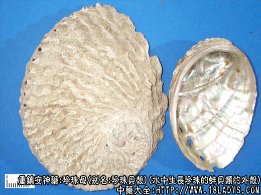

别名：珍珠贝壳
来源：为淡水或海水中生长珍珠的蚌贝类的外壳。
产地：与珍珠同。
性状鉴别：本品来源于多种蚌贝，因而形态不尽相同，但均经过洗刷烧烤，已呈疏松易碎层片状。商品多体形不整，片块大小不一，厚2~5毫米。表面乳白色或残留有部分棕黑色外皮，生长线纹及层纹紧密。内面较平滑，有珍珠样光泽。易碎断，断层极薄亦有光泽。气味与珍珠相同。
以片大，色白，有光泽，质松脆者为佳。
效用：与珍珠略同。
注：随着人类对自然界的不断实践和认识，对珍珠的生成及其所含成分，有了较全面的了解，蚌壳内层成分基本与珍珠相同。其医疗效用相似，也已为许多研究人员及医药工作者所共认。因珍珠生产困难，价格昂贵，珍珠母货源充沛，价格低廉，为了降低药价，保障医药需要，应研究推广使用珍珠母以取代珍珠。
珍珠母各地药用习惯不同，南方沿海地带多用海产贝类，内地及北方多用淡水蚌壳，有时来自加工纽扣后的下脚料。但均以壳松有光泽为标准。
京津将未经加工烤煅的海产马氏珍珠贝，定名为珍珠贝壳，与珍珠母价格不同，区别供应。